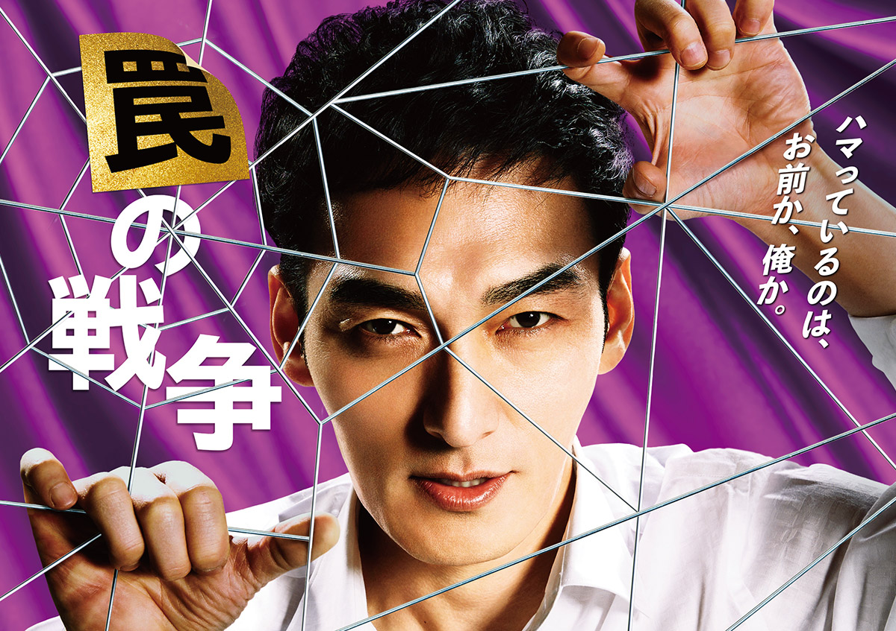

💰 銭の戦争 (2015年)
東大卒の元証券マン・白石富生（草彅剛）は父親の借金の連帯保証人となり、全ての財産を失う。失ったものを取り戻すため、金融の世界で成り上がろうと奮闘する物語。
🤥 嘘の戦争 (2017年)

家族を惨殺された一ノ瀬浩一（草彅剛）は、詐欺師として復讐を遂げるため帰国。巧妙な嘘を駆使し、事件の真相に迫るサスペンス。
🕸 罠の戦争 (2023年)
恩義を感じて尽くしてきた政治家の秘書・鷲津亨（草彅剛）は、ある事件をきっかけに復讐を誓う。権力者や組織を相手に、巧妙な罠で相手を追い詰めるサスペンス。
📝 まとめ
草彅剛の戦争シリーズは、三部作でそれぞれ異なる舞台・設定で展開されます。シリーズ通して見ることで、草彅剛の多彩な演技とサスペンスの醍醐味を楽しめます。